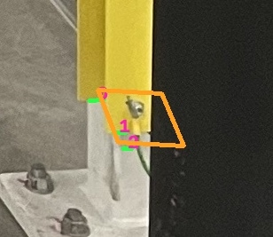
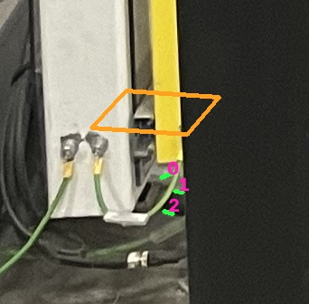
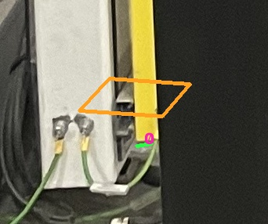
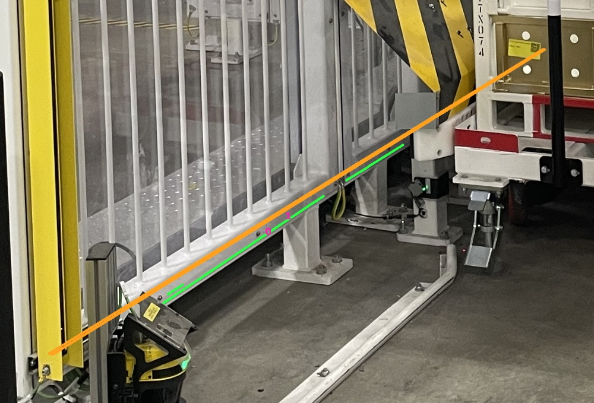

物理下沿：原图与模型错位检查
之前完成了共同地面和模型卡尺，但光幕网格仍取单图深度分位数，左右围栏的下沿来源也不等价。因此此前不能宣称已经量到同一条物理下沿。
本轮修正：分开围栏的原图边界与深度过滤轮廓；同时处理左右围栏；光幕端边必须直接连接到壳体，排除线缆和支架；前面板、侧翼仍须跨图确认身份。
本页实验没有替换默认场景模型，也没有证明左右高度已准确。 相等约束只作为对照；20/24 cm 检查值未参与拟合，当前米制标尺仍未通过联合验证。
三维写回助手会重新加载导出的 GLB 检查实际底面；但数值收敛不能让错误部位获得替换资格。现阶段的阻点是同一部位在多张原图中的稳定对应。
A/B 使用此前完整推理中的模型；C 起使用当前公开报告的模型并复用同次推理的相机、SAM 与点图。初始光幕模型不同，不能将轮次差异当作单因素消融。C 触发 600 s 上限；D 将已有的线对拒绝检查提前，避免对明显无效线对继续做立杆拓扑计算。后续同边实验要求光幕各视角共同选择一条模型边，避免每张照片独立换面。此前 Real2sim 纹理与相机实验
第 5 轮 · workcell-physical-bottoms-2026-10-02-e
缓存几何上的原图端边重算：137.26 s；预留资源价格估算 $0.244。不是完整照片→模型的延迟；账单金额未获取。
看图方式：橙色四边形＝拟合前 3D 长方体底面投到照片上的轮廓；绿色短线＝照片里的外壳/横杆下沿候选。两者不贴合就是正在检查的错位。


C 起围栏的拟合起点包含与共同地面的刚体对齐。没有绿线表示这一视角没有通过提取检查，不能理解为旧模型已正确。
- 右围栏：29 条候选；来源照片 [1, 3, 4]。候选不等于跨图对应已确认。
- 左围栏：16 条候选；来源照片 [2, 4]。候选不等于跨图对应已确认。
- 右光幕：9 条候选；来源照片 [1, 2, 3, 4]。候选不等于跨图对应已确认。
- 左光幕：7 条候选；来源照片 [2, 3, 4]。候选不等于跨图对应已确认。
- curtains-independent：候选优化 RMS 6.25 原图像素；未通过物理身份验证
- curtains-shared：候选优化 RMS 8.85 原图像素；未通过物理身份验证
- fences-independent：候选优化 RMS 1.66 原图像素；未通过物理身份验证
- fences-shared：候选优化 RMS 1.67 原图像素；未通过物理身份验证
查看第 1 轮记录
第 1 轮 · workcell-physical-bottoms-2026-10-02-a
缓存几何上的原图端边重算：85.01 s；预留资源价格估算 $0.151。不是完整照片→模型的延迟；账单金额未获取。
看图方式：橙色四边形＝拟合前 3D 长方体底面投到照片上的轮廓；绿色短线＝照片里的外壳/横杆下沿候选。两者不贴合就是正在检查的错位。


C 起围栏的拟合起点包含与共同地面的刚体对齐。没有绿线表示这一视角没有通过提取检查，不能理解为旧模型已正确。
- 右围栏：0 条候选；来源照片 []。候选不等于跨图对应已确认。
- 左围栏：0 条候选；来源照片 []。候选不等于跨图对应已确认。
- 右光幕：17 条候选；来源照片 [1, 2, 3, 4]。候选不等于跨图对应已确认。
- 左光幕：13 条候选；来源照片 [1, 2, 3, 4]。候选不等于跨图对应已确认。
- curtains-independent：候选优化 RMS 7.78 原图像素；未通过物理身份验证
- curtains-shared：候选优化 RMS 7.86 原图像素；未通过物理身份验证
- fences-independent：fence-0: at least two source photos are required
- fences-shared：fence-0: at least two source photos are required
查看第 2 轮记录
第 2 轮 · workcell-physical-bottoms-2026-10-02-b
缓存几何上的原图端边重算：71.78 s；预留资源价格估算 $0.127。不是完整照片→模型的延迟；账单金额未获取。
看图方式：橙色四边形＝拟合前 3D 长方体底面投到照片上的轮廓；绿色短线＝照片里的外壳/横杆下沿候选。两者不贴合就是正在检查的错位。


C 起围栏的拟合起点包含与共同地面的刚体对齐。没有绿线表示这一视角没有通过提取检查，不能理解为旧模型已正确。
- 右围栏：0 条候选；来源照片 []。候选不等于跨图对应已确认。
- 左围栏：2 条候选；来源照片 [2]。候选不等于跨图对应已确认。
- 右光幕：4 条候选；来源照片 [1, 2, 3]。候选不等于跨图对应已确认。
- 左光幕：1 条候选；来源照片 [4]。候选不等于跨图对应已确认。
- curtains-independent：post-box-2: at least two source photos are required
- curtains-shared：post-box-2: at least two source photos are required
- fences-independent：fence-0: at least two source photos are required
- fences-shared：fence-0: at least two source photos are required
查看第 3 轮失败记录
第 3 轮 · workcell-physical-bottoms-2026-10-02-c
运行失败，没有可用模型或完整拟合结果。函数占用 600.49 s，资源价格估算 $1.066；失败也计入支出。
查看第 4 轮记录
第 4 轮 · workcell-physical-bottoms-2026-10-02-d
缓存几何上的原图端边重算：98.15 s；预留资源价格估算 $0.174。不是完整照片→模型的延迟；账单金额未获取。
看图方式：橙色四边形＝拟合前 3D 长方体底面投到照片上的轮廓；绿色短线＝照片里的外壳/横杆下沿候选。两者不贴合就是正在检查的错位。


C 起围栏的拟合起点包含与共同地面的刚体对齐。没有绿线表示这一视角没有通过提取检查，不能理解为旧模型已正确。
- 右围栏：29 条候选；来源照片 [1, 3, 4]。候选不等于跨图对应已确认。
- 左围栏：16 条候选；来源照片 [2, 4]。候选不等于跨图对应已确认。
- 右光幕：9 条候选；来源照片 [1, 2, 3, 4]。候选不等于跨图对应已确认。
- 左光幕：7 条候选；来源照片 [2, 3, 4]。候选不等于跨图对应已确认。
- curtains-independent：候选优化 RMS 2.51 原图像素；未通过物理身份验证 下载候选 GLB（native 单位）
- curtains-shared：候选优化 RMS 3.52 原图像素；未通过物理身份验证 下载候选 GLB（native 单位）
- fences-independent：候选优化 RMS 1.66 原图像素；未通过物理身份验证
- fences-shared：候选优化 RMS 1.67 原图像素；未通过物理身份验证
本页 5 次临时双 A100 实验资源价格合计估算 $1.762，非实际账单。使用冻结的相机、点图与当前共同地面；不是新一轮完整 oneshot。